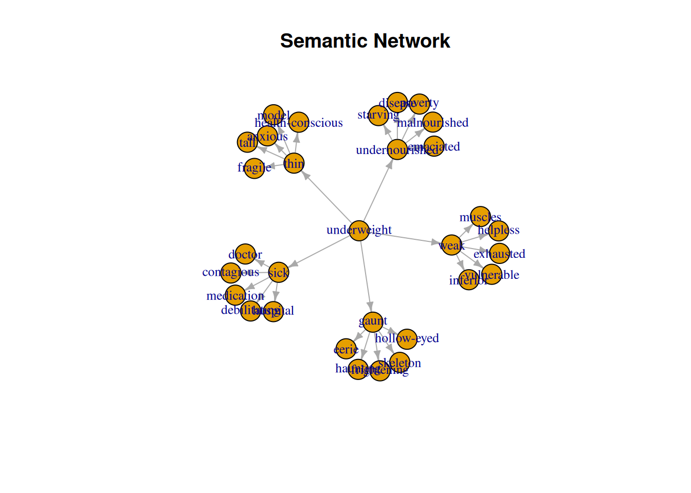
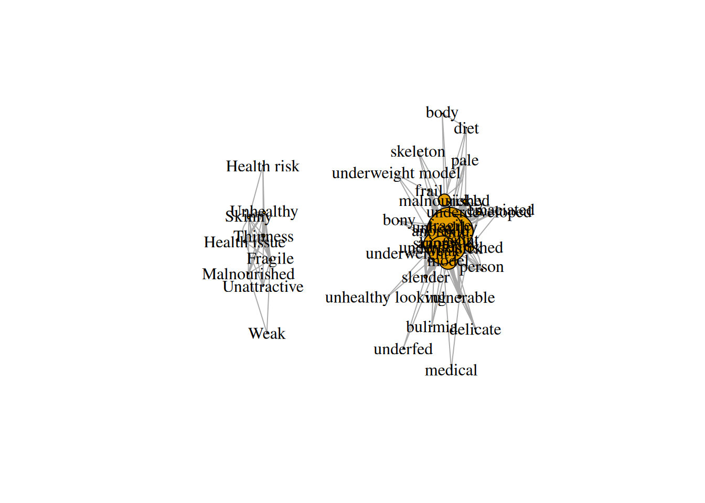
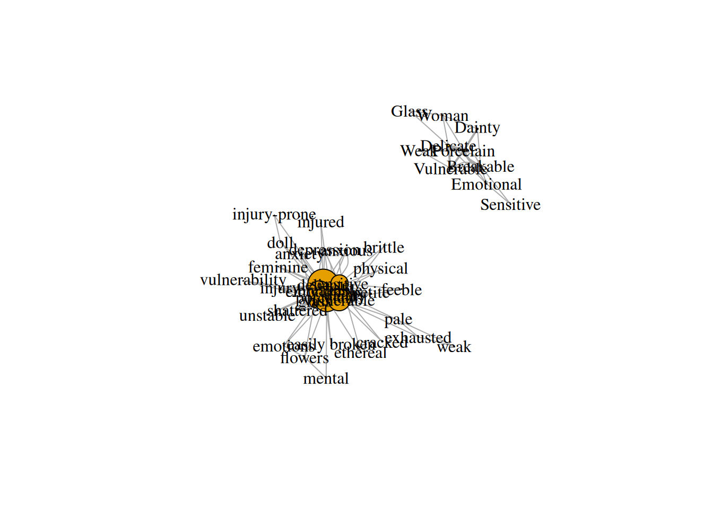
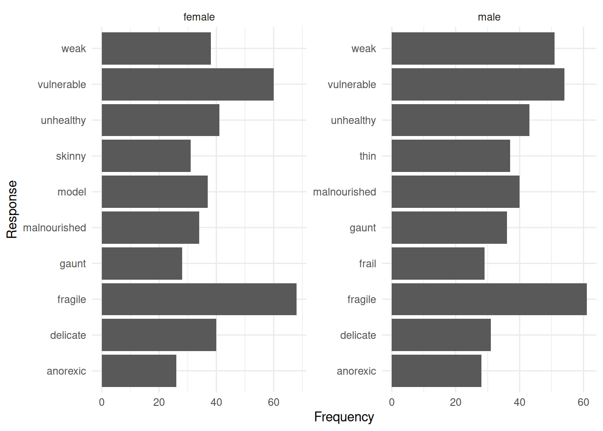
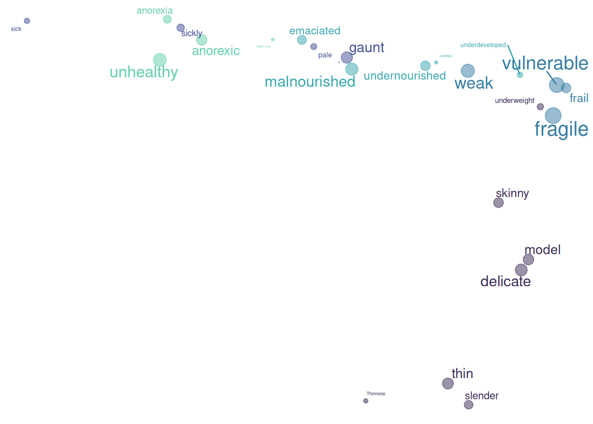
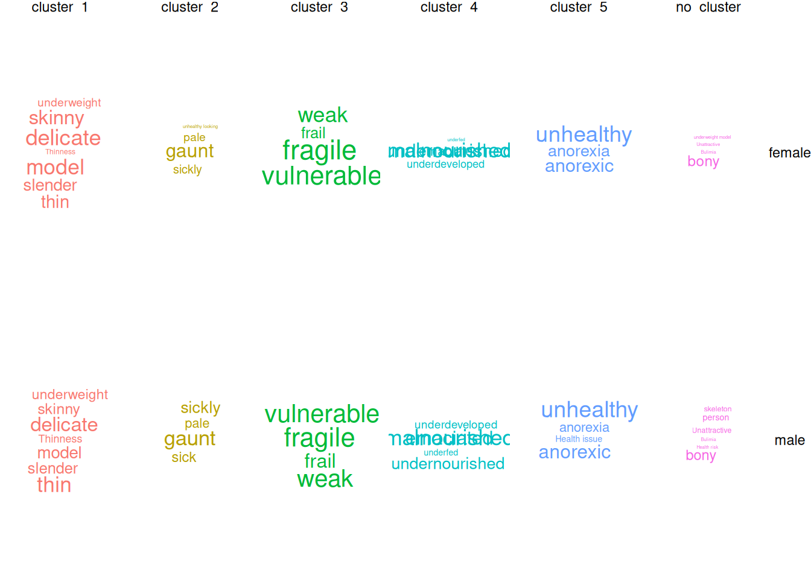
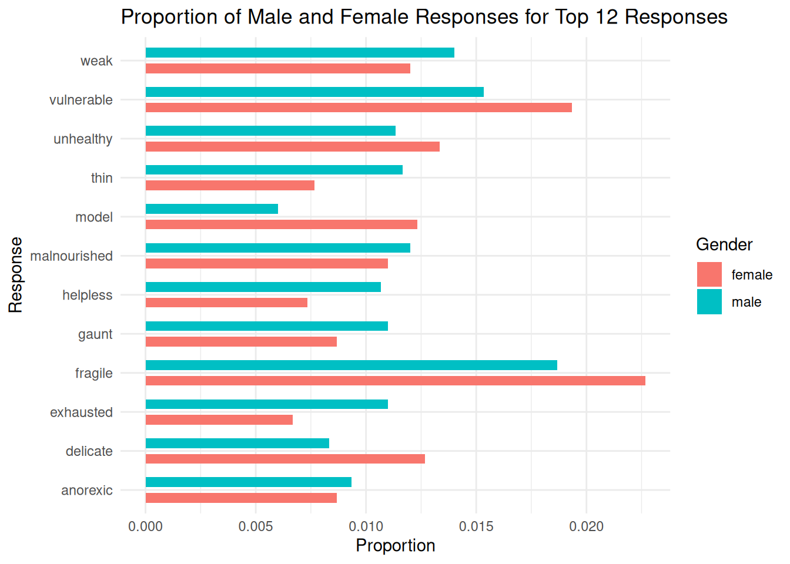

## global variables:
# only if necessary to limit running timeanalyze word associations - first and second order
Notes
load needed pre-processed data
# sets the directory of location of this script as the current directory
# setwd(dirname(rstudioapi::getSourceEditorContext()$path))
# load packages
require(pacman)
p_load('DT', 'associatoR', 'tidyverse', 'wordcloud', 'readxl', 'igraph', 'visNetwork')
# load data
setwd("../generated data")
dir()[1] "word_associations_firstOrder_adjectives.xlsx"
[2] "word_associations_firstOrder.xlsx"
[3] "word_associations_firstSecondOrder.xlsx" # for first order associations example
associationData <- read_excel(path = "word_associations_firstSecondOrder.xlsx", sheet = 1)describe data
dim(associationData)[1] 3000 6length(unique(associationData$participant_id))[1] 100table(associationData$participant_id)
0_0 0_1 0_2 0_3 0_4 1_0 1_1 1_2 1_3 1_4 10_0 10_1 10_2 10_3 10_4 11_0
30 30 30 30 30 30 30 30 30 30 30 30 30 30 30 30
11_1 11_2 11_3 11_4 12_0 12_1 12_2 12_3 12_4 13_0 13_1 13_2 13_3 13_4 14_0 14_1
30 30 30 30 30 30 30 30 30 30 30 30 30 30 30 30
14_2 14_3 14_4 15_0 15_1 15_2 15_3 15_4 16_0 16_1 16_2 16_3 16_4 17_0 17_1 17_2
30 30 30 30 30 30 30 30 30 30 30 30 30 30 30 30
17_3 17_4 18_0 18_1 18_2 18_3 18_4 19_0 19_1 19_2 19_3 19_4 2_0 2_1 2_2 2_3
30 30 30 30 30 30 30 30 30 30 30 30 30 30 30 30
2_4 3_0 3_1 3_2 3_3 3_4 4_0 4_1 4_2 4_3 4_4 5_0 5_1 5_2 5_3 5_4
30 30 30 30 30 30 30 30 30 30 30 30 30 30 30 30
6_0 6_1 6_2 6_3 6_4 7_0 7_1 7_2 7_3 7_4 8_0 8_1 8_2 8_3 8_4 9_0
30 30 30 30 30 30 30 30 30 30 30 30 30 30 30 30
9_1 9_2 9_3 9_4
30 30 30 30 sort(table(associationData$response), decreasing = TRUE)[1:10]
fragile vulnerable weak unhealthy malnourished delicate
124 104 78 74 69 63
gaunt thin model anorexic
59 58 55 54 create semantic networks
The idea of Network Inference from Fluency Data is motivated by two articles:
- Wulff, D. U., Hills, T. T., & Mata, R. (2022). Structural differences in the semantic networks of younger and older adults. Scientific Reports, 12(1), Article 1. https://doi.org/10.1038/s41598-022-11698-4
- Goñi, J., Arrondo, G., Sepulcre, J., Martincorena, I., Vélez de Mendizábal, N., Corominas-Murtra, B., Bejarano, B., Ardanza-Trevijano, S., Peraita, H., Wall, D. P., & Villoslada, P. (2011). The semantic organization of the animal category: Evidence from semantic verbal fluency and network theory. Cognitive Processing, 12(2), 183–196. https://doi.org/10.1007/s10339-010-0372-x
function to create semantic networks (! without checking if all the edges are “true”, appear more frequently than expected randomly):
# Function to create edges from the grouped responses
create_edges <- function(association, distance = 2) {
edges <- data.frame()
n <- length(association)
for (i in 1:n) {
for (d in 1:distance) {
if (i + d <= n) {
edges <- rbind(edges, data.frame(from = association[i], to = association[i + d]))
}
}
}
return(edges)
}
generate_association_network <- function(cue_word, data_set, distance = 2) {
# Filter the dataset based on the cue word
tmp <- data_set[data_set$cue == cue_word, ]
# print number of times a response was given:
print("number of times a response was given")
print(sort(table(tmp$response)))
grouped_responses <- tmp %>%
group_by(participant_id) %>%
summarise(associations = list(response)) %>%
ungroup()
# Apply the function to create edges for each participant
all_edges <- do.call(rbind, lapply(grouped_responses$associations, create_edges, distance = distance))
# Calculate word frequencies across the entire data set
word_frequencies <- tmp %>%
count(response, name = "frequency")
# Calculate the edge weights (how often each link appears between two words)
edge_weights <- all_edges %>%
group_by(from, to) %>%
summarise(weight = n(), .groups = "drop")
# Create the graph from the edge list with edge weights
g <- graph_from_data_frame(edge_weights, directed = FALSE)
# Get the list of unique words in the graph (vertices)
vertices <- V(g)$name
# Extract edge weights to adjust the edge widths
edge_widths <- E(g)$weight
# Map word frequencies to vertex sizes
vertex_sizes <- sapply(vertices, function(word) {
freq <- word_frequencies %>%
filter(response == word) %>%
pull(frequency)
if(length(freq) == 0) {
return(1) # Default size if the word is not found (shouldn't happen)
} else {
return(freq)
}
})
# Plot the network with vertex sizes proportional to word frequencies and edge widths proportional to edge weights
plot(g,
vertex.label.color = "black",
vertex.size = vertex_sizes * 0.5, # Scale vertex sizes by word frequency
edge.width = edge_widths * 1, # Scale edge widths by weight (number of links)
edge.arrow.size = 0.5)
# Return the igraph object
return(g)
}for our individual person
tmp_person <- associationData[associationData$participant_id == "0_1",]
# Create edges based on the response level
edges_level_1 <- tmp_person %>%
filter(response_level == 1) %>%
select(cue, response)
edges_level_2 <- tmp_person %>%
filter(response_level == 2) %>%
select(cue, response)
# Combine edges into one data frame
edges <- rbind(
edges_level_1,
edges_level_2
)
# Create an igraph object
g <- graph_from_data_frame(edges, directed = TRUE)
# Plot the graph
plot(g, vertex.label.cex = 0.8, vertex.size = 15, edge.arrow.size = 0.5,
main = "Semantic Network")
for our central cue “underweight”
tmp_g <- generate_association_network("underweight", associationData, distance = 2)[1] "number of times a response was given"
body bony bulimia diet
1 1 1 1
Health risk medical skeleton Unattractive
1 1 1 1
underfed underweight model unhealthy looking Weak
1 1 1 1
delicate emaciated Malnourished pale
2 2 2 2
underweight frail Health issue person
2 3 3 3
Fragile Skinny Unhealthy slender
4 4 4 5
Thinness underdeveloped vulnerable sickly
5 5 5 8
sick malnourished gaunt anorexia
13 19 22 25
model skinny anorexic undernourished
29 36 42 44
weak thin unhealthy fragile
44 52 53 60 
# interactive network:
E(tmp_g)$width <- 1
E(tmp_g)$weight <- E(tmp_g)$weight / max(E(tmp_g)$weight )
E(tmp_g)[ weight > 0.3 ]$width <- 2
E(tmp_g)[ weight > 0.4 ]$width <- 3
E(tmp_g)[ weight > 0.5 ]$width <- 4
E(tmp_g)[ weight > 0.6 ]$width <- 5
E(tmp_g)[ weight > 0.7 ]$width <- 6
visIgraph(tmp_g)for a first order association “fragile”
tmp_g <- generate_association_network("fragile", associationData, distance = 2)[1] "number of times a response was given"
anxiety brittle cracked doll easily broken
1 1 1 1 1
Emotional emotions ethereal exhausted feeble
1 1 1 1 1
feminine flowers Glass injured injury-prone
1 1 1 1 1
mental pale physical Sensitive unstable
1 1 1 1 1
vulnerability weak Weak Woman anxious
1 1 1 1 2
Dainty depression injury petite shattered
2 2 2 2 2
Vulnerable Breakable Delicate Porcelain glass
2 3 4 4 14
dainty sensitive emotional vulnerable breakable
20 26 31 33 38
porcelain delicate
38 46 
apply associatoR package
prepare data
# Importing the associationData data
ar_obj <- ar_import(data = associationData,
participant = participant_id,
cue = cue,
response = response,
participant_vars = c(gender),
response_vars = c(response_position, response_level))
# normalize responses
ar_obj <- ar_normalize(ar_obj,
case = "most_frequent",
punct = "all",
whitespace = "squish",
process_cues = TRUE)5 duplicate entries were dropped from cues due to normalizing.# set targets
ar_obj <- ar_set_targets(ar_obj, targets = "cues")
# embed associations
ar_obj <- ar_embed_targets(associations = ar_obj, method = "ppmi-svd") %>%
ar_cluster_targets(method = "louvain",
similarity = "cosine",
resolution = 1.1)7 targets with count < min_count were dropped from embedding.Warning in fun(A, k, nu, nv, opts, mattype = "matrix"): all singular values are
requested, svd() is used instead# characterize targets using additional resources
ar_obj <- ar_characterize_targets(
ar_obj,
characteristics = c("valence", "arousal", "dominance"),
case_sensitive = FALSE
) # "word_frequency", "concreteness"
# correlate targets responses with participant variables
ar_obj <- ar_correlate_targets(
ar_obj,
participant_vars = c(gender),
metric = "auto"
)Warning: NA correlations produced for targets not found in responses, check
ar_normalize() and ar_set_targets() settings.Joining with `by = join_by(target)`analyze data
characterize targets regarding valence
df_targets <- as.data.frame(ar_obj$targets)
df_targets[order(df_targets$valence),] target cluster valence arousal dominance gender_corr
2 sick cluster_2 2.29 4.67 2.84 0.38655567
31 Unattractive no_cluster 2.37 4.30 3.47 0.05862104
13 unhealthy cluster_5 2.55 4.36 5.11 -0.09656091
9 anorexic cluster_5 2.71 4.24 3.43 0.04012862
5 weak cluster_3 2.95 4.90 5.32 0.17186002
23 sickly cluster_2 3.16 4.41 3.85 0.18731716
27 frail cluster_3 3.55 2.65 3.04 0.18452078
20 vulnerable cluster_3 3.57 4.50 3.05 -0.22941573
28 pale cluster_2 4.11 3.18 4.18 0.07986523
24 skeleton no_cluster 4.37 4.55 4.64 0.14285714
6 fragile cluster_3 4.67 3.05 4.00 NA
25 bony no_cluster 4.95 4.89 5.31 -0.02252458
12 skinny cluster_1 5.36 4.27 5.79 -0.32102894
3 thin cluster_1 5.47 4.50 5.33 0.26431720
14 slender cluster_1 6.05 4.17 5.32 -0.06289709
4 person no_cluster 6.10 3.71 6.00 0.17586311
11 model cluster_1 6.38 3.90 6.53 -0.34338179
19 delicate cluster_1 6.38 3.09 5.04 -0.19834184
1 underweight cluster_1 NA NA NA 0.10411584
7 undernourished cluster_4 NA NA NA -0.12087344
8 gaunt cluster_2 NA NA NA 0.10166046
10 anorexia cluster_5 NA NA NA -0.17457431
15 underfed cluster_4 NA NA NA 0.10206207
16 underweight model no_cluster NA NA NA -0.10050378
17 malnourished cluster_4 NA NA NA 0.10633485
18 unhealthy looking cluster_2 NA NA NA -0.10050378
21 Bulimia no_cluster NA NA NA 0.00000000
22 underdeveloped cluster_4 NA NA NA 0.02973505
26 emaciated cluster_4 NA NA NA 0.33333333
29 Thinness cluster_1 NA NA NA 0.14744196
30 Health issue cluster_5 NA NA NA 0.17586311
32 Health risk no_cluster NA NA NA 0.10050378check for gender differences
ar_obj$targets$target[order(ar_obj$targets$gender_corr)[1:5]] # more frequently by women[1] "model" "skinny" "vulnerable" "delicate" "anorexia" ar_obj$targets$target[order(ar_obj$targets$gender_corr, decreasing = TRUE)[1:5]] # more frequently by man[1] "sick" "emaciated" "thin" "sickly" "frail" sum(associationData$response == "vulnerable")[1] 104table(associationData$gender[associationData$response == "vulnerable"])
female male
58 46 ar_obj %>%
plot(facet_by = "gender", top_n = 10)
cluster data (Louvain algorithm)
table(ar_obj$targets$cluster)
cluster_1 cluster_2 cluster_3 cluster_4 cluster_5 no_cluster
7 5 4 5 4 7 ar_plot_embedding(
ar_obj,
color_by = cluster,
color_set = "G",
alpha = 0.5,
proportion_labels = 1
)
ar_plot_wordcloud(
ar_obj,
facet_col = cluster,
facet_row = gender,
color_by = cluster,
top_n = 20
)Warning in wordcloud_boxes(data_points = points_valid_first, boxes = boxes, :
Some words could not fit on page. They have been placed at their original
positions.Warning in wordcloud_boxes(data_points = points_valid_first, boxes = boxes, :
One word could not fit on page. It has been placed at its original position.
tmp <- ar_cross_targets(ar_obj,
participant_vars = c(gender),
target_var = cluster,
normalize = TRUE)
DT::datatable(data = tmp)ar_compare_targets(ar_obj,
participant_vars = c(gender),
target_var = valence,
fun = median, na.rm = TRUE)# A tibble: 2 × 2
gender valence
<chr> <dbl>
1 female 4.67
2 male 3.57Poportion of top 12 by gender
library(ggplot2)
library(dplyr)
# Get the top 12 most common responses
top12 <- names(sort(table(associationData$response), decreasing = TRUE)[1:12])
# Filter the data for the top 12 responses and count gender distribution
gender_distribution <- associationData %>%
filter(response %in% top12) %>%
group_by(response, gender) %>%
summarise(count = n(), .groups = 'drop') %>%
mutate(proportion = count / nrow(associationData))
# Create the rotated plot with increased space between bars
ggplot(gender_distribution, aes(x = proportion, y = response, fill = gender)) +
geom_bar(stat = "identity", position = position_dodge(width = 0.8), width = 0.5) +
labs(title = "Proportion of Male and Female Responses for Top 12 Responses",
x = "Proportion",
y = "Response",
fill = "Gender") +
theme_minimal()